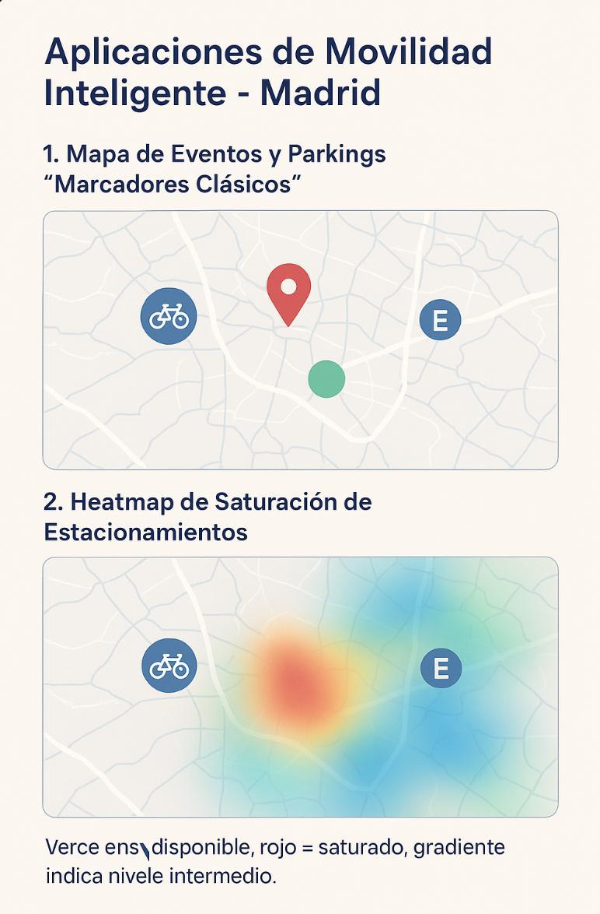

MoveMadrid is a web-based intelligent mobility application integrating three datasets: upcoming events in Madrid, car parking locations, and bike-sharing stations. The application links these datasets to help users plan their trips and discover events efficiently.
Objectives
Allow users to visualize events and parking locations on an interactive map.
Enable analysis of availability and congestion using a neighborhood heatmap.
Provide an alert system for user-scheduled events of interest.
Requirements
Display an interactive map with selected events and nearby parking (bikes and cars) within each neighborhood.
Generate a heatmap where each neighborhood has a score based on the number of events and parking spots; use color scales: red for events, green/blue for parking.
Allow users to schedule alerts for events of interest and receive notifications when important dates approach.
Mockups Proposals
Proposal 1 Interactive map of Madrid showing events and nearby parking locations.
Proposal 2: Neighborhood heatmap showing event and parking scores with color scales.
Proposal 3: Alerts panel with personalized notifications according to user interests. (tbd)

Conceptual mockup — image located in the same folder as this HTML.